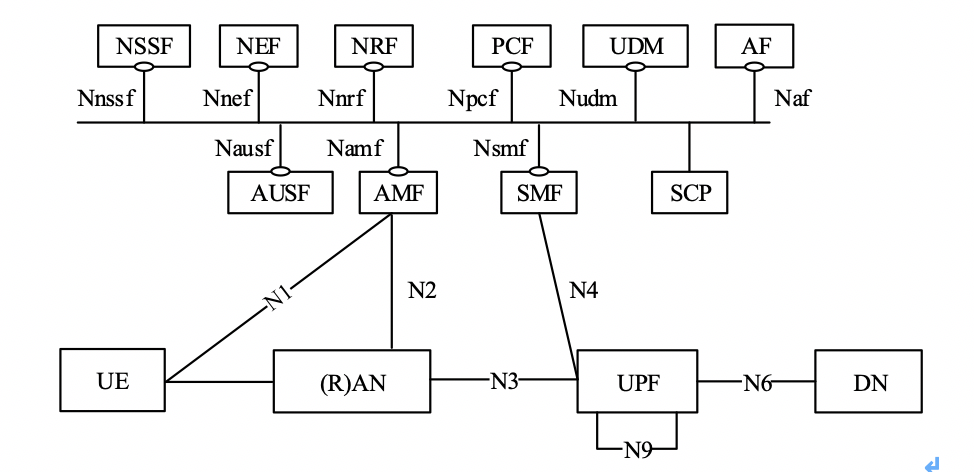
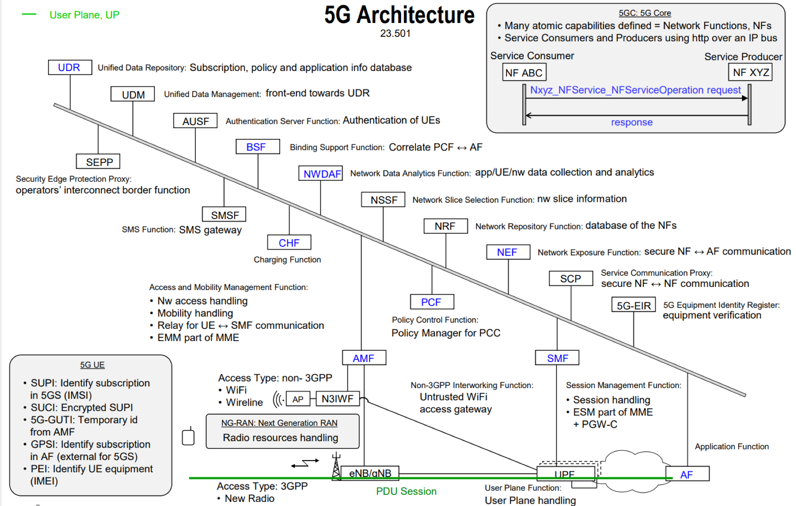
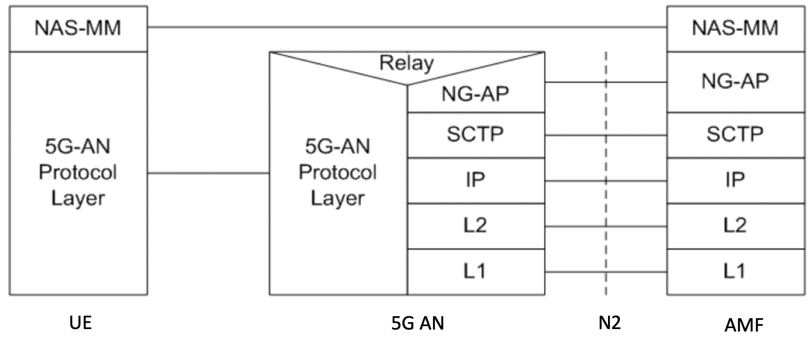
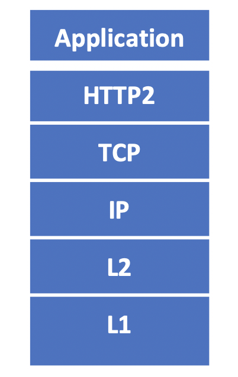

联系我
- mail:bearing512@foxmail.com
- wechat:zc_zoro
 沪公网安备 31012002005714号 沪ICP备2023007215号-1
沪公网安备 31012002005714号 沪ICP备2023007215号-1
Copyright © 2023 ibearing.top. All rights reserved.
eMBB (Enhanced Mobile Broadband)10Gbps 的速率, mMTC (massive Machine Type Communication) 海量连接数，uRLLC (Ultra-Reliable Low Latency Communication)时延低。按照我的理解，2g解决的是基础通信的问题，打电话，发短信，发彩信这些。等到3g的时候，这时候拿着手机已经可以冲浪了。等到了4g的时候，能够传输高质量视频图像，在智能手机上就能连接世界。等到了5g的时候就为了一统天下，智能社会。为啥嘛，因为可靠，速度快，带宽高，还便宜啊【虽然现在还不便宜T.T】。

这张图上从23501上抄的，简单的来说，4GMME 专注于移动性管理，SGW 和 PGW 共同进行会话管理和数据传输，整个网络控制与承载分离，呈扁平化结构,等到了5G的时候，控制面和用户面的彻底分离，传统网元被拆分为多个网络功能NF。AMF：负责用户的移动性和接入管理，SMF：负责用户会话管理功能，UDM负责前台数据的同一处理，包括用户标识、用户签约数据、鉴权数据等，AUSF配合UDM专门负责用户鉴权数据相关的处理等等

上图清晰的描述了周边的网元及其基本的功能，转自网络，侵权我删就是了。
n1 n2 协议栈

NAS-MM: NAS-MM协议负责注册管理、连接管理、用户面连接的激活和去激活操作，负责NAS消息的加密和完整性保护。
sbi 接口协议栈

5GC内部网元之间的接口为SBI接口，采用HTTP2服务的形式.
沪公网安备 31012002005714号 沪ICP备2023007215号-1
Copyright © 2023 ibearing.top. All rights reserved.